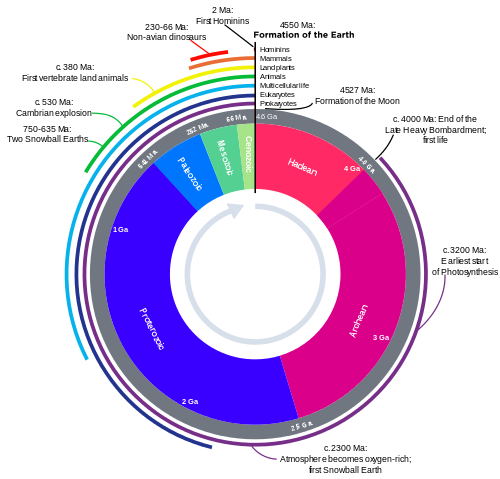
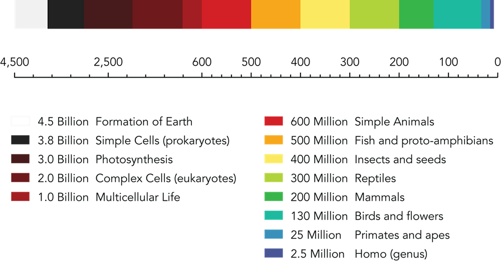
The climate and geology of our planet have changed over hundreds of millions of years, causing
dramatic changes in life forms on earth
- Geological time provides sufficent time for the process of natural selction to create
large-scale changes in organisims
- About 1.7 milion species have been described, and millions more await descoverty
- Current species on earth account for ≈1%
The fossil recod documents the history of life on Earth
- Fossils are the preserved remains of impressins of individual organisms that lived in the past,
and are often found in sedimentay rock
- Older fossils are found in deeper, older rock layers
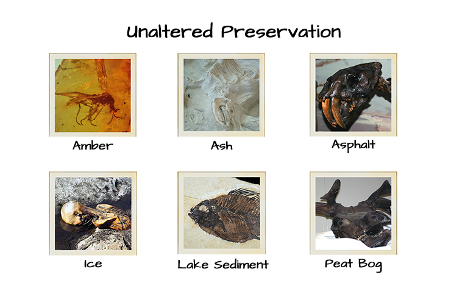
Estimation of fossil ages
-
Absolute dating
- Radoisotopes (Radioactive Half-life)
Relative dating
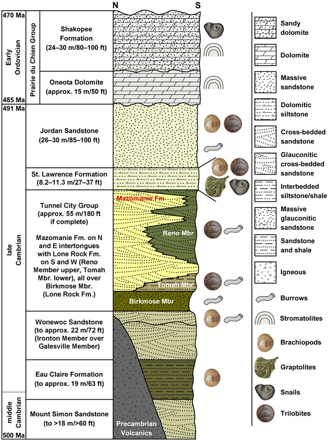
The fossil record is not complete
The fossil record contains many gaps because:
- Most organsims decompose rapidly after death and do not form fossils
- Organisms may not live near areas where sediments typically form
- Those fossils that are formed can be destroyed by common Geological processes such as
erosion and extreme heat or pressure
- Fossils are hard to find
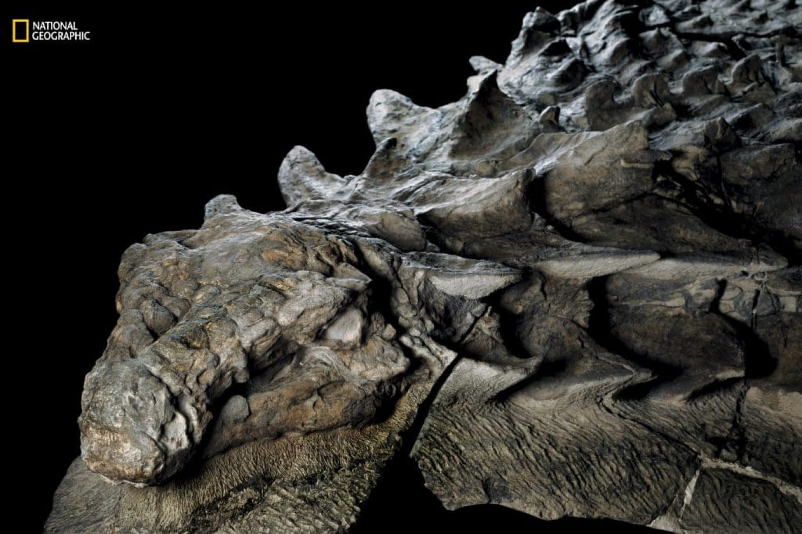
Fossils revela that whales are closely related to a group of hoffed mammals
-
Whales have relative complete fossil record, which enables scientists to observe
many transitional forms that document their evolutionary past
- Whales show the greatest DAN similarity to artiodactyls, which are even-toed,
hooved land mammals (such as hippos, camels, and giraffes)
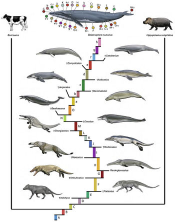
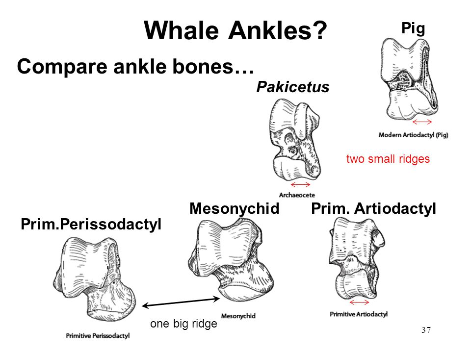
Single-celled life appeared by 3.5 billion years ago
- Earth rocks as old as 3.8 billion years old contain carbon deposists that hint at life.
- Cell-like structures have been found in stromatolites that formed 3.5 billion years ago
- ... more
The evolution of oxygen-productin phhotosynthesis was on tof the most importanty
events in the history of life on earth
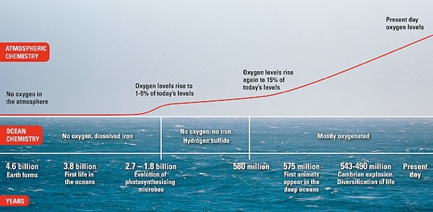
Mulicellular life evlved around 650 million years ago
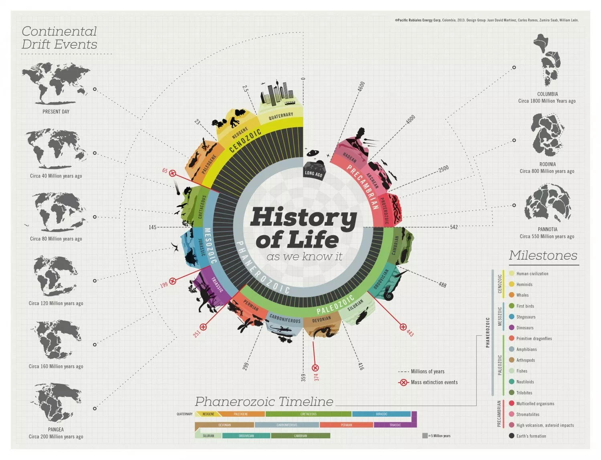
Cambrian Period
multiple adaptive radiations of animal life
- Starting in the early to middle Cambrian period, 530 mya, there was a
dramatic increase in the diversity of anumal life, known as the Cambrian explosion
which lasted only 5-10 million years
- THe presence of new predtors may have created the need for natural selection
Colonization of land followed the Cambrian Expolsion
- Green alae were the first organisms to colonize land about 500 mya(million years ago)
- PLants covered Earth by the end of the Devonian period, 360 mya
- Fungi appeared on land at about the same time as plants; the two groups developed
mutualisms
Waterproofing, effiecent transport mechanisms and roots helped land plants
acquire and conserve water
Land plants evloved key innovations to deal with the challenges of terrestrial lif:
- Water proof cuticles
- ... more
Amphibians, the first VERTERBRATES to colonize land, and thought to have decended
frm lobe-finned fishes
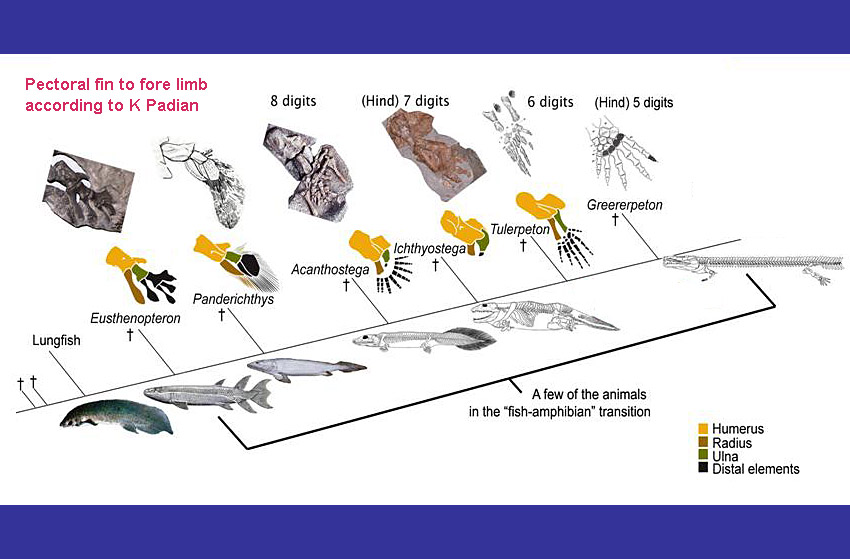
Reptiles evolved from amphibians and were the first to evolve the amniotic sac
- No need for going back to water to reproduce
- Mammals, the dominant vertebrate group on land currently, evolved from
reptiles roughly 220 mya
Mass Extinctions: Worldwide Losses of Species
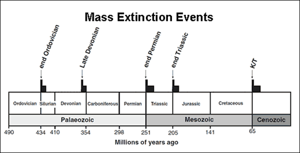
- The fossil record shows that there have been five mass extinctions, periods
of time during which great numbers of species went extinct throughout most of Earth
- Each mass extinction has left a permante martk on the history of life
The extinction of one or more groups of organisms can provide new ecological
and evolutionary opportunities for other groups of organisms.
Macroevolution
- Organisms differ radically in form, in embryological development, in body plans,
and in ecology
- Microevolution is the change in allele frequencies that occurs over time within
a population
- Macroevolution refers to large-scale changes in organisms, generally occurring
over millions of years
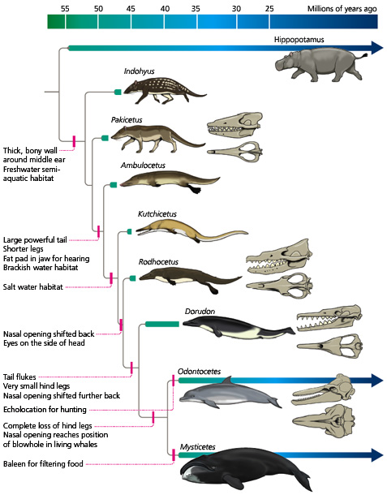
Factors Causing Macroevolution
Geologic timescale - used to be considered the only factor
Dramatic macroevolutionary changes can ocurr over geological timescales because
of its immense magnitued and also because geologic processes can alter the position of continetns,
cause shifts in atmospheric composition, and produce large-scale changes
Rapid Macroevolution through Differential Gene Expression
The relatively new field of evo-devo has demonstrated that changes in patterns of gene expression can bring
about dramatic changes in from
Macroevolution does not necessarily require vast timescales in order to produce large changes
- A small alteration in the expression of a single homeotic gene can rapidly lead to a significant
phenotypic change and interoduce a completely novel vertebrate body plan.
- Homeotic genes control deveopment of whole body segments or structures.
Difference in patterns of gene expression explan many of the differnce between chimps and humans
- Human and chimpanzee genomes are approximately 98 percent similar
- Humans have same genes for hair growth that a chimpanzee has, but these gene are only expressed
in certain ares
Similarities between organisms can be used to infer their evolutionary histories
- Organizing and classify the tremendous diverity of life on Earth is the focus of a discipline called txonomy
- An evolutionary tree ...
- The goal of phylogenetics is to construct evolutionary trees that illustrate the pattersn of species evolution
An evolutionary tree maps the relationships between ancestral groups and their descendants
- Living things have diversified into many lines of descent, or lineages, that have evolved into many different types of organisims
some of them now extinct
- THe node represents the most recent common ancesotr of the two lineages in question- that is, the most immediate ancestor that both lineages share
- A given ancestor and all its descendants make up a clade, or branch, on an evolutionary tree
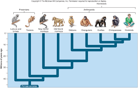
Shared derived traits are evolutionary novelties tha reveal relatedness among species
- THe most useful characteristics for discerning evolutionary relationships are unique features that are found in a groups
most recent common ascestor
- Shared derved traits (homogous traits) are evolutionary novelties shared by an ancestor and its descendants but not seen in groups that
are not direct descendants of that ancestor
The Linnean System of Biological Classification
- Taxonomy (Linnaean Hierarchy) began by Carolus Linnaeus. Published 1735
- The species is the smallest unit (lowest level) of classification in the Linnaean hierarchy
- Closely related species are grouped togther in genous
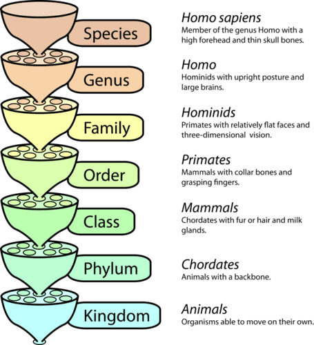
Note: KPCOFGS Kids Pefere Candy Over French Grown Spinach
Clasdistic taxonomy: classification based on evolutionary relationships
Clade: a branch on a phylogenetic tree
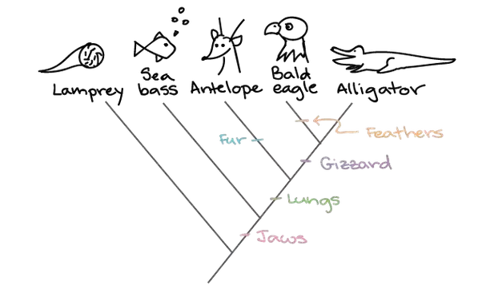
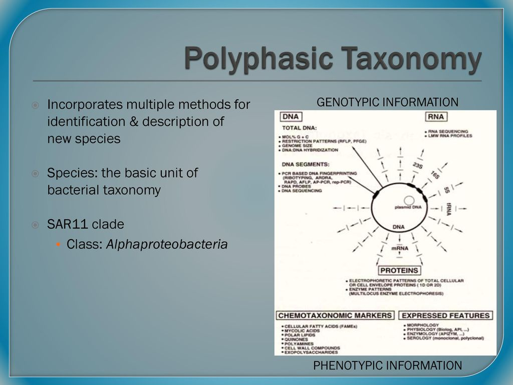
What are species
- The Biological Species Concept defines a species as "members of populations that actually or potentially interbreed in nature."
- Interbreeding ⇛ producing viable/fertile offspring
- The Evolutionary Species Concept defines a species as "al lineage evolving seperately from others and with it's own unitary role and tendencies."
Reproductive isolation
- Post-zygotic: Individuals are able to reproduce living, but steril offstprin
- Pre-sygotic: Individuals are unable to fertilize each other's gametes, or even unable to copulate at all
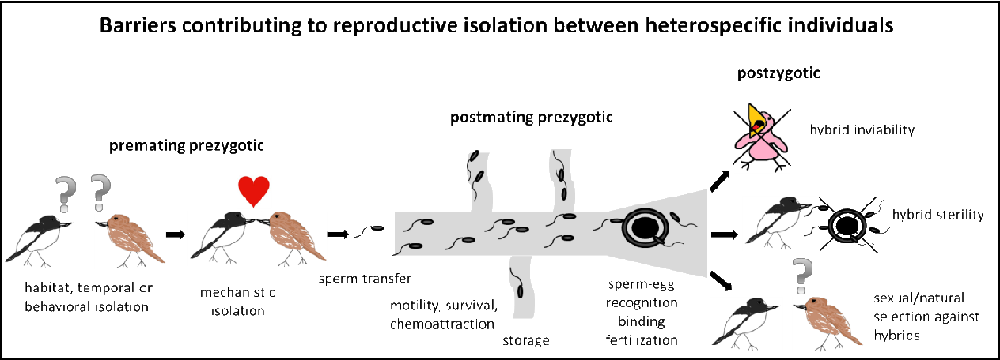